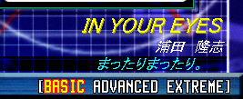

選曲と決定
選曲と決定
- 曲リストを上下に移動し、演奏したい曲に選曲カーソルを合わせて決定して下さい。
- ギター対応曲の選曲
- ギターでカーソルの上下を行なうと、ギター対応曲のみ強調表示されるようになります。（ギター対応曲とは、#GLEVEL が 0 でない曲を意味します。）対応曲以外も選択することは可能です。
- スピードパネル
- 演奏画面での譜面のスクロール速度の倍率を表示しています。バスペダルを２回すばやく踏むことで、速度を x0.5 ずつ変更することができます。
- 曲種パネル
- 曲リストに表示すべき曲種を表示しています。ハイタムを叩くごとに、表示する曲種を切り替えることができます。
表示順：
ALL → DTX → BMS → GDA → G2D → MID → ALL に戻る
- 難易度の変更（対応曲のみ）
- セットファイルに対応した曲データの場合、選曲カーソルを合わせると、画面右下の曲情報表示に、以下の画面で示すような文字列（[BASIC ADVANCED EXTREME]など；曲によって異なる）が表示されます。
 ← ３つの難易度が存在
この場合、ハイハットを２回すばやく叩く（ギターの場合はＧボタンを押しながらPick２回）ことで、この難易度を変更することが出来ます。
- MUSIC BOX からの脱出
- 曲リストは階層構造を持ちますが、子階層から親階層に抜ける場合は、「↑戻る」を選択する以外に、フロアタムを叩くことでも可能です。
- 終了
- ESCキーを押下することにより、タイトル画面に戻ります。